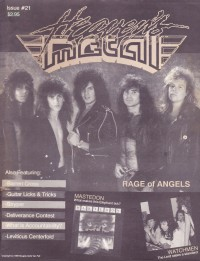

CMnexus
:
Contemporary Christian culture, music, and media.
Magazines
Profiles
Dove Awards
cmnexus.org
CM
nexus
→
Profiles
→
R
Rage of Angels
On the cover

October 1989
Heaven's Metal
Media coverage:
Oct 1989 in
Heaven's Metal
"Angels Gone Bad?", by
Doug Van Pelt
Albums & reviews:
1988
:
4-song demo
1989
:
Rage of Angels
Aug 1988 in
Heaven's Metal
, by
Doug Van Pelt
Spr 1989 in
Harvest Rock Syndicate
, by
Kevin Allison
Jun 1989 in
CCM
, by
Doug Van Pelt
Jul 1989 in
Adonai Metal Rock
Fall 1989 in
YouthWorker
, by
Mike Atkinson
Books about Rage of Angels
"
Rage of Angels
" in
The Encyclopedia of Contemporary Christian Music
(
Mark Allan Powell
,
2002
).
CMnexus
(noun)
The magazine index
of modern music
and Christianity
© 2011 CMnexus. Last updated May 2025.
Contact:
Rants and other correspondence to:
editor -AT- cmnexus
-DØT- org
About